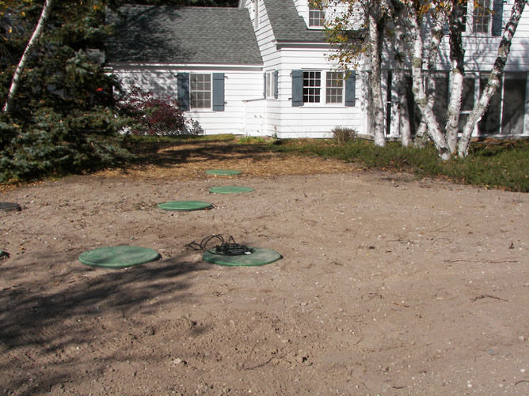
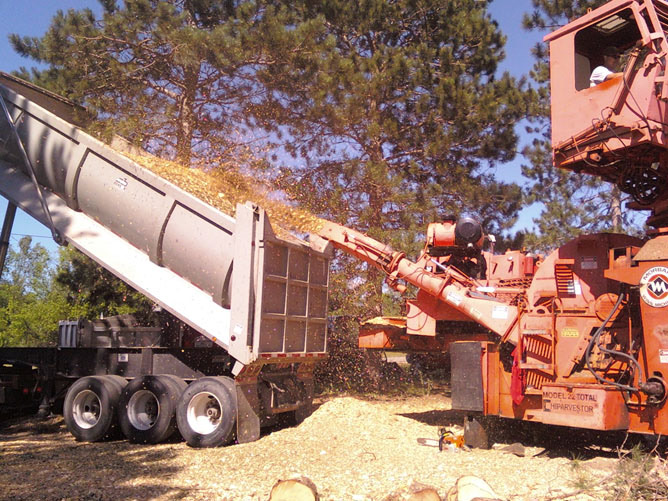
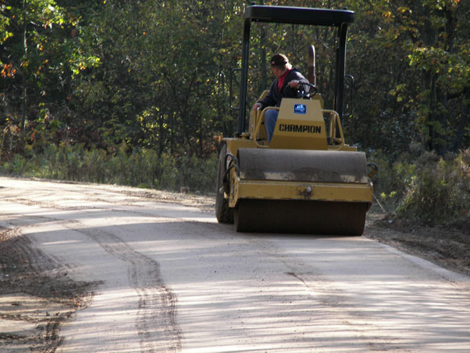
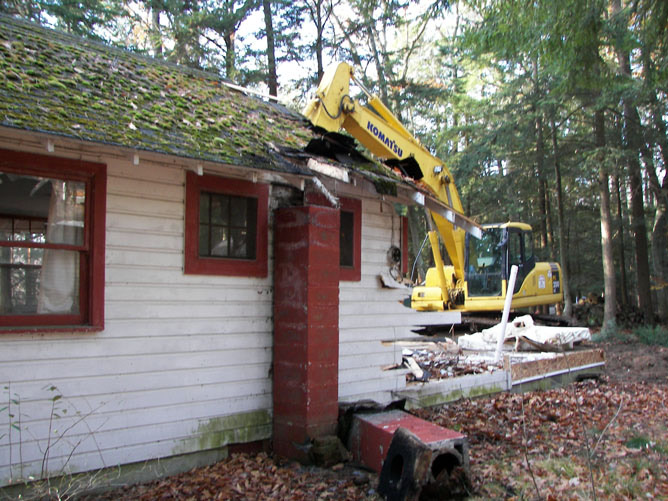

Services
Everything thatstarts with a dig.
Inland or lakeshore, residential or commercial, small or large. Here is what our two crews do across Benzie, Leelanau and Manistee counties.
Septic systems
We install complete septic systems: the tanks, the drain field and, where the site needs it, a pump system. Our own excavators and trucks handle the digging, setting and backfill.
- Septic tanks
- Drain fields
- Pump systems
- Infiltrator systems


Site development
Prepping new building sites for homes or other buildings, both inland and lakeshore, both commercial and residential.
- New home sites
- Commercial building sites
- Inland and lakeshore lots


Shoreline repair
With DEQ approval, we can bolster and protect eroding shorelines using filter fabric underneath various sizes of stone.
- Erosion protection with stone
- Filter fabric underlayment
- Work done with DEQ approval


Ponds
We dig new ponds, install pond liners, and improve or clean out existing ponds.
- New ponds
- Pond liner installation
- Improving & cleaning out existing ponds


Foundations & retaining walls
We dig and backfill foundations, and dig and install retaining walls, from stacked wall systems to wooden walls.
- Foundation digging & backfill
- Basements
- Stacked-block retaining walls
- Wooden retaining walls

Driveways, roads & demolition
We build driveways and small private roads, haul aggregates, and take down old structures and clear the site.
- Driveways
- Small private roads
- Hauling aggregates
- Demolition


Wildlife food plots
From the first clearing to the final planting: we clean up the ground, plow, disk and drag it, test and fertilize the soil, and plant.
- Initial clearing & clean-up
- Plowing, disking & dragging
- Soil testing & fertilizing
- Final planting
Have a lot, a lake or a project in mind?
Call the office or send us the details, and we will talk through what your property needs.